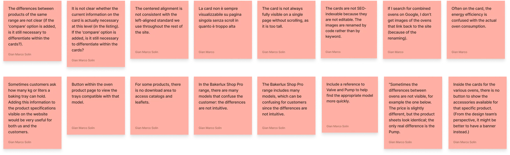
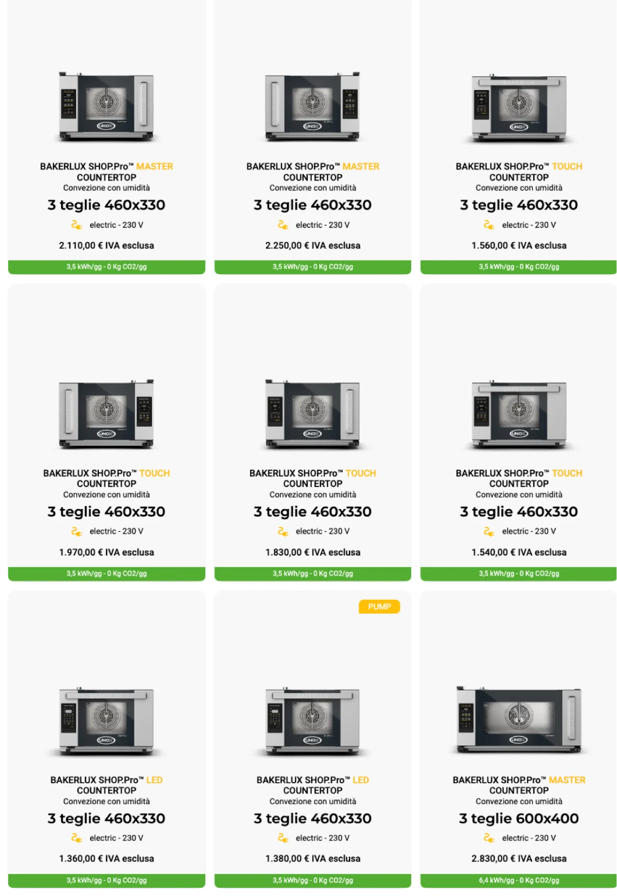
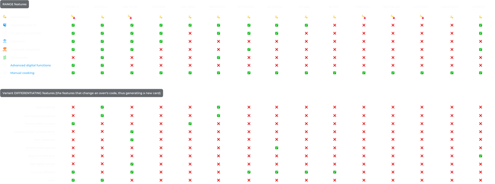
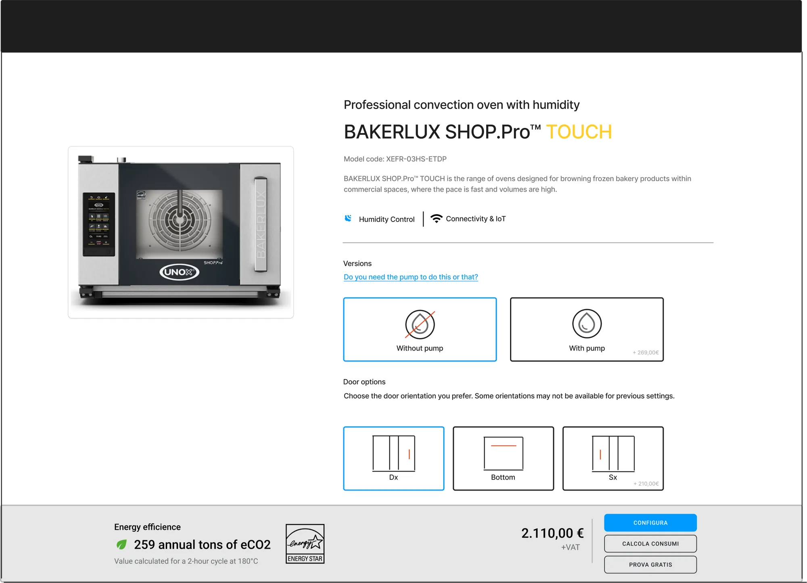

Product cards restyle
Making product listings less of a “spot the difference” game with a quick change.
A complete redesign of the product listing cards, reorganizing information hierarchy and giving them a well-deserved style upgrade to make browsing smoother and more intuitive.
Problem
Product listings often displayed many similar-looking items side by side.
Without filtering, users were left guessing the actual differences between products.
Outcome
The new card design surfaced the most relevant features at a glance, helping users spot key differences instantly, make faster decisions, and explore the catalog with way more confidence.
Gathering Insights
The project kicked off by reviewing feedback already collected and clearly presented by the Inside Sales and Marketing teams.
These insights highlighted where users struggled most with the product listings and gave a solid starting point for redesigning the cards:
- Understanding the differences between similar products
- Existing labels were unclear and not informative enough
- The vertical card layout made scanning the listings slow and confusing

State of art

Label
Proportional img
Product name
Category
Number of trays (size)
Type of alimentation
Price
Emissions label
Benchmark & Competitor Analysis
We reviewed competitors’ product listings to see how others were presenting multiple products.
We realized that no one else had nearly as many variations of a single product as we do.
This confirmed that we needed a thoughtful approach to handle high product density while keeping clarity for the user, or alternatively, find ways to reduce this density in some form.
Here one of the worst cases: impossible for 10/10 users to understand in a rapid test.

Mapping Differentiating Features
After careful research, we defined which characteristics truly make a product stand out. We organized them into three categories:
- Range features: these differentiate one product range from another, or separate different lines within the same range
- Differentiating features: these distinguish individual products within a single line
- Size: expressed as the number of trays, which is another key differentiator among products in the same line.

Wireframing a first project solution
The first logical solution we came up with was to provide the user with information step by step, dividing it into stages:
- In the listing, the cards show the user only the range features and, if applicable, a preview of the versions of the same product.
- On click, the user reaches the product detail page, where they can select and view the different variants, differentiated by their differentiating features.
The idea initially seemed promising: it significantly reduced the number of cards in the listing and greatly simplified the user’s first selection process. It was also a behavior already familiar to users.


The idea initially looked like a winner: it cut down the number of cards in the listing and made the user’s first selection process much simpler.
It even played nicely with a behavior users were already familiar with.
But as they say, not everything that glitters is gold. After an initial discussion with the marketing team, we realized the proposal would reduce the number of cards by around 32%, dealing a serious blow to SEO positioning.
Designing for Clarity
By management decision, we couldn’t sacrifice SEO, so the huge number of products remained front and center for users.
The challenge then was to make each card as clear and understandable as possible, highlighting differentiating information effectively. Key improvements included:
- Optimizing the reading order of information
- Clarifying the naming of both range and differentiating features
- Improving the green label, which now also opens a detailed info popup
- Reducing image size, since larger images didn’t help users tell products apart
- Resizing cards to prevent them from being cut off on the standard vertical page
- Adding a “Compare” button to give users an easy way to directly contrast products, but we well talk about this later.
Old card →
New card →

 Digital panel
Digital panel Automatic programs
Automatic programs Humidity control
Humidity control Advanced digital intelligence
Advanced digital intelligence Connectivity & IoT
Connectivity & IoT Automatic washing
Automatic washing


Product comparator
By clarifying key information and making differentiating features immediately visible, we uncovered the need for a tool that could help users compare products side by side to complete solving their problems.
I followed the comparator project from start to finish, which you can check out by clicking below, and it became a real game-changer for both customers and the sales team.
Other projects

Comparator
A product comparator that helped customers navigate 1,000 look-alike products, cutting confusion in half and giving sales teams the tool they had been waiting for.

SPEED.Compact
Powering the future of fast food: a sleek, intuitive interface for accelerated ovens that boosts workflows, cuts training time, and delivers consistency across every location.

UNOX Design System
From 2023 to 2024, I led UNOX’s design system revamp, evolving it from a two-person library into a scalable, multi-platform design ecosystem.